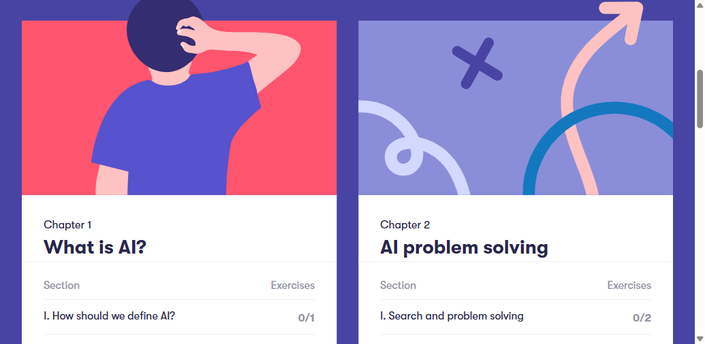
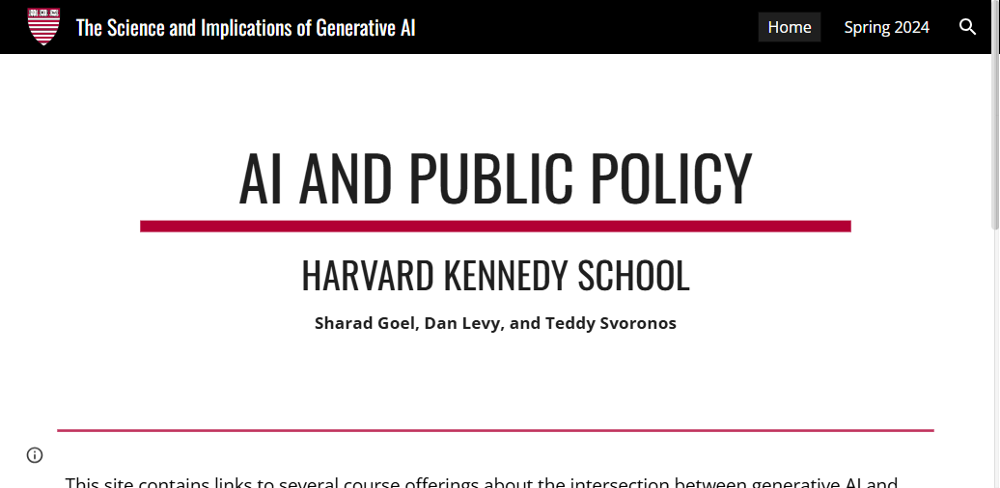

La Inteligencia Artificial en Contexto
¿Qué es (y qué no es) la Inteligencia Artificial?
Constantemente llamamos "IA" a cosas que no lo son. Un sistema informático cruza la línea hacia la Inteligencia Artificial solo cuando posee dos capacidades innegociables:
1. Autonomía
Ejecuta tareas en entornos complejos sin que un humano le haya programado una lista de reglas rígidas del tipo "Si pasa X, haz Y".
2. Adaptabilidad
Mejora su rendimiento al estar expuesto a más datos ("experiencia"). Ajusta su matemática interna para no repetir errores.
❌ Lo que NO es IA
Sistemas estáticos. Si cambian las condiciones del entorno, el programa se rompe o es incapaz de reaccionar.
- Una hoja de cálculo (Excel): Calcula fórmulas ultracomplejas en milisegundos, pero solo obedece la función matemática exacta que usted escribió. No aprende.
- Un buscador de documentos (Ctrl+F): Localiza exactamente la cadena de texto que usted escribió. Si comete un error tipográfico, no encuentra nada. No interpreta.
- Un termostato programado: Enciende la calefacción si la temperatura baja de 20 °C. Nunca aprende que usted prefiere 18 °C los fines de semana.
- Almacenamiento en la nube (Dropbox/Drive): Guarda y recupera archivos con precisión perfecta, pero no tiene ninguna capacidad de aprender ni adaptarse.
✅ Lo que SÍ es IA
Sistemas dinámicos. Encuentran patrones por su cuenta y cambian su comportamiento al recibir nueva información.
- Filtro de correo SPAM: Aprende continuamente qué es "basura" observando los correos que usted marca como tal. Nadie le programó una lista infinita de palabras prohibidas.
- Recomendación de rutas (Google Maps): Evalúa en tiempo real tráfico, accidentes y cierres para sugerirle la ruta más rápida. Mejora sus predicciones con cada viaje registrado.
- Recomendación musical (Spotify): Mapea sus gustos frente a millones de usuarios y descubre patrones que ningún humano le programó explícitamente.
- Detección de fraude bancario: Analiza miles de transacciones por segundo y aprende sus patrones normales de gasto. Si compra en un país extraño, lo bloquea preventivamente.
El Colapso del Coste: Por qué ahora
La teoría matemática de la IA se conocía desde los años 50. Pero tres catalizadores convergieron en la última década y lo cambiaron todo: una revolución en hardware, un nuevo paradigma de arquitectura y acceso a una escala de datos sin precedentes. El resultado: lo que antes costaba millones, hoy cuesta miles. Y lo que costaba miles, hoy cuesta centavos.
Los 3 Catalizadores del Cambio
1. La Revolución del Hardware
Las unidades de procesamiento gráfico (GPU), diseñadas originalmente para videojuegos, resultaron perfectas para la IA. El coste por operación matemática cayó 10× cada 5 años. Sin este salto, los modelos actuales serían imposibles de entrenar.
2. Los Transformers (2017)
Un equipo de investigadores publica "Attention is All You Need": el paper que redefine la arquitectura de la IA. Los Transformers permiten procesar texto en paralelo y escalar a billones de parámetros. Es el motor de todo modelo de lenguaje actual.
3. Internet como Corpus
La humanidad lleva décadas digitalizando conocimiento: libros, artículos, código, conversaciones. Internet se convirtió en el corpus de entrenamiento más grande de la historia, disponible de forma gratuita.
La Curva de Democratización
Coste real de usar IA de primer nivel (USD por millón de tokens, escala logarítmica). La línea gris muestra lo que esperaría la Ley de Moore solo con mejoras de hardware. La IA cae mucho más rápido porque también mejoran los algoritmos.
La carrera ya no es de quien puede permitirse la IA. Es de quien tiene los mejores datos y la visión estratégica para aplicarla. El hardware se democratizó; la ventaja competitiva, no.
¿Qué significa esto para tu área de trabajo?
Operaciones
Los procesos repetitivos basados en reglas fijas son candidatos directos para IA. Si hoy alguien sigue un manual paso a paso, mañana puede ser un agente supervisado.
Datos e información
Sus datos internos son su mayor ventaja diferencial. Un modelo entrenado o conectado a sus datos propios hace cosas que ninguna herramienta genérica puede replicar.
Liderazgo
La pregunta ya no es "¿usamos IA?" sino "¿en qué proceso específico, con qué datos y bajo qué controles?" Esa concreción es lo que separa a quien implementa de quien experimenta.
¿Pero cómo llegamos hasta aquí? La historia de la IA no es una línea recta de triunfos — es una montaña rusa de promesas rotas, inviernos prolongados y revoluciones silenciosas que nadie anticipó. En el siguiente capítulo, hacemos ese viaje.
Historia y Evolución de la IA
Selecciona una era en la línea de tiempo para explorar su impacto histórico y extraer la lección estratégica.
Tres lecciones que no caducan
El ciclo se repite
Hype → inversión masiva → promesas incumplidas → invierno → revolución silenciosa. Reconocer en qué fase estamos es la principal ventaja del ejecutivo informado.
La ciencia sobrevive al mercado
Durante los inviernos de la IA, el capital se retiró pero los investigadores siguieron publicando. Las breakthroughs de hoy son la acumulación silenciosa de décadas de trabajo que nadie financiaba.
Estamos dentro de un ciclo
El ciclo actual comenzó alrededor de 2017 y sigue en curso. Identificar el momento correcto para invertir, adoptar o esperar no es intuición: es lectura de historia.
Cómo Funciona la Inteligencia Artificial
Las Muñecas Rusas de la Tecnología
La Inteligencia Artificial no flota en el vacío. Para entenderla, debemos abrir las muñecas rusas (matrioshkas) desde la ciencia base que hace todo esto posible, hasta llegar a la vanguardia actual.
El universo general. Aquí residen la programación, las bases de datos y la arquitectura de hardware. Es el "lienzo" sobre el que se pinta todo lo demás.
El motor lógico. Antes de la IA moderna, ya usábamos la matemática para calcular "qué es más probable que ocurra".
Nace al aplicar computación para imitar raciocinio. Inicialmente era rígida, dependiendo de reglas programadas a mano.
El gran salto. Le damos estadística y datos a la máquina para que infiera patrones por sí sola, sin programarle reglas explícitas.
Usa Redes Neuronales de múltiples capas para asimilar abstracciones complejas (como visión artificial).
El Machine Learning: La base de toda IA
Todo lo que hoy llamamos "Inteligencia Artificial" es, en su raíz, Machine Learning: sistemas que aprenden patrones a partir de datos en lugar de seguir reglas programadas a mano. La IA generativa —ChatGPT, Claude, Gemini— no es una tecnología aparte: es la expresión más visible y accesible de esta misma base. Entender cómo aprenden las máquinas es entender por qué la IA generativa funciona como funciona.
El modelo aprende de ejemplos etiquetados por humanos (imagen + "esto es un tumor"). Base de la detección de fraude, diagnóstico médico asistido y filtros de spam. Requiere grandes volúmenes de datos etiquetados — el recurso más caro.
El modelo encuentra patrones sin etiquetas previas: agrupa clientes similares, detecta anomalías en ciberseguridad o comprime datos. Útil cuando hay mucha información pero no se sabe todavía qué preguntas hacer.
El modelo se entrena prediciendo partes ocultas de su propio input ("La capital de Francia es ___"). No necesita etiquetas humanas: el texto completo actúa como su propia corrección. Convirtió internet en un dataset de entrenamiento gratuito e ilimitado. Es el paradigma que hace posible GPT, Claude y Gemini.
El modelo mejora recibiendo señales de recompensa. En IA generativa se usa como RLHF (Reinforcement Learning from Human Feedback): evaluadores humanos califican respuestas y el modelo aprende a imitar las mejor valoradas. Es el paso que transforma un predictor de texto en un asistente que "quiere ayudar".
Modelos Fundacionales: El Gran Cambio de Paradigma
La mayor ruptura conceptual de los últimos años no fue técnica. Fue de filosofía de ingeniería.
Cada uno entrenado por separado. No compartían nada. Si aparecía una tarea nueva, había que empezar de cero.
Imagina que antes contratabas 10 especialistas distintos —uno por idioma, uno por contabilidad, uno por atención al cliente. Un Modelo Fundacional es como contratar a alguien con formación enciclopédica que, con una semana de contexto sobre tu empresa (fine-tuning), puede hacer todas esas tareas. Ningún especialista podría anticipar las tareas que aún no existen. El polímata sí.
A esa escala, el modelo no memoriza: abstrae. Comprende estructura, no ejemplos.
Los Grandes Modelos de Lenguaje (LLMs) al desnudo
✂️ Laboratorio 1: La máquina no lee letras, lee "Tokens"
Antes de que la IA pueda procesar cualquier texto, este debe convertirse en números. Ese proceso se llama tokenización.
El proceso en 4 pasos
🔬 Pruébalo tú mismo
Escribe cualquier texto y observa cómo se divide en tokens (bloques de color). Cada color = un token diferente = un número único para la IA.
* Esta demo usa tokenización simplificada por palabras. El modelo real usa Byte-Pair Encoding (BPE) que también subdivide palabras largas o poco comunes.
Prueba "Electroencefalografista": la IA la ve como 5–6 bloques numéricos, no como letras individuales. Por eso le resulta difícil decirte cuántas "a" tiene: nunca vio las letras, solo vio fragmentos.
🔬 La herramienta real: así tokeniza GPT-4 (BPE)
El demo de arriba simplifica la tokenización para facilitar la intuición. Esta herramienta usa el algoritmo real (BPE — Byte Pair Encoding) de GPT-4: los resultados pueden diferir, especialmente en palabras compuestas, números y caracteres especiales. En el campo User → Content escribí una frase y observá cómo la divide en tokens.
🧠 Laboratorio 2: El Cerebro del Transformer en 3D
Un Transformer es una máquina que apila el mismo bloque de procesamiento decenas de veces. Cada bloque tiene exactamente cuatro etapas. Entenderlas es entender cómo funciona realmente la IA generativa:
Antes de procesar nada, cada token se convierte en un
vector: una lista de miles de números flotantes que representa su
"posición" en un espacio matemático de alta dimensión. En ese espacio, las palabras con
significados relacionados quedan físicamente cerca. El ejemplo clásico: Rey − Hombre + Mujer ≈ Reina. La
máquina no entiende el lenguaje; opera sobre geometría.
📐 En el visualizador: cada token se estira verticalmente en una columna de números — eso es el vector embedding.
El núcleo del Transformer. Para cada token, el modelo genera tres vectores internos: Consulta (Q), Clave (K) y Valor (V). Luego calcula cuánta "atención" debe poner cada palabra en cada otra. En la frase "Fui al banco a depositar dinero", la palabra banco pondrá máxima atención en depositar y dinero — y así resolverá la ambigüedad. Este cálculo ocurre en paralelo para todos los tokens a la vez, con múltiples "cabezas" de atención capturando distintas relaciones simultáneamente (sintaxis, semántica, correferencia).
🔗 En el visualizador: las líneas verdes que conectan palabras son los pesos de atención calculados en tiempo real.
Después de la atención, cada token pasa individualmente por una red neuronal densa de dos capas (la red feedforward). Esta etapa, frecuentemente ignorada, es donde los investigadores creen que el modelo almacena el conocimiento factual: hechos, relaciones causales, datos del mundo. Un modelo moderno tiene entre 32 y 96 de estos bloques apilados: las primeras capas capturan sintaxis básica, las intermedias semántica profunda, las últimas patrones de razonamiento.
🧱 Es el componente más "pesado" del modelo: representa la mayor parte de los parámetros totales.
La capa final proyecta el vector resultante sobre todo el vocabulario (50,000–100,000 palabras) y asigna a cada una una probabilidad. El modelo no siempre elige la de mayor probabilidad: un parámetro llamado temperatura controla la "creatividad". Temperatura baja → respuestas conservadoras y predecibles. Temperatura alta → mayor variedad, más riesgo de error. Luego el proceso se repite desde cero: el token generado se añade a la entrada y se recalcula todo — así, de un token por vez, emerge el texto.
🎲 En el visualizador: la columna final muestra esas probabilidades. El modelo "lanza un dado ponderado" en cada paso.
Recursos para quienes quieren ir más lejos.
Del Transformer al LLM: Cómo se genera el texto
Entender la arquitectura Transformer es el primer paso. El segundo es entender qué ocurre cuando ese mecanismo se aplica a billones de parámetros y trillones de palabras — y cómo produce texto coherente.
La diferencia es la escala
Un Transformer pequeño puede tener millones de parámetros. Un LLM moderno tiene entre 7.000 y 1.800.000 millones. Esa diferencia de escala no es solo cuantitativa: a cierto umbral aparecen capacidades que los modelos pequeños no tienen — razonamiento, traducción, código — sin que nadie las programara explícitamente.
Entrenado en texto de internet
Durante el pre-entrenamiento, el modelo lee billones de tokens: libros, artículos, código, conversaciones. La tarea es simple: predecir la palabra siguiente. Esa presión repetida sobre trillones de ejemplos fuerza al modelo a internalizar gramática, hechos, lógica y relaciones entre conceptos — todo sin etiquetas humanas.
Ajustado para ser útil (RLHF)
Un modelo pre-entrenado solo predice texto — no "ayuda". Para convertirlo en asistente, se aplica RLHF: evaluadores humanos califican respuestas y el modelo aprende a imitar las mejor valoradas. Este paso es el que transforma un predictor de texto en ChatGPT, Claude o Gemini.
¿Cómo genera el texto, exactamente? — El bucle autorregresivo
El LLM no genera una respuesta completa de golpe. La construye una pieza a la vez, en un bucle que se repite cientos o miles de veces:
Una respuesta de 300 palabras implica ~400 repeticiones de este bucle. En cada una, el modelo recalcula todo el contexto acumulado desde cero.
📋 La ventana de contexto
El modelo solo "ve" el texto que cabe dentro de su ventana de contexto — medida en tokens. GPT-4 maneja ~128.000 tokens (~300 páginas); modelos avanzados llegan a 1 millón. Todo lo que queda fuera de esa ventana no existe para el modelo.
Implicación práctica: en conversaciones largas, el modelo "olvida" lo que ocurrió al inicio. No es fallo de memoria — es límite de arquitectura.
⚠️ Lo que el LLM realmente hace
El modelo no "piensa", no "entiende" ni "consulta" una base de datos de verdades. En cada paso ejecuta multiplicaciones matriciales sobre vectores de alta dimensión para determinar cuál es el token estadísticamente más probable dado el contexto.
Eso explica por qué suena seguro cuando se equivoca: el mecanismo de generación es el mismo independientemente de si la respuesta es correcta o incorrecta.
Explorá cada componente del pipeline paso a paso
Nadie programó a estos modelos para razonar paso a paso, traducir idiomas o escribir código. Esas capacidades aparecieron solas al cruzar cierto umbral de escala — como el agua que pasa de líquida a vapor en un grado exacto, sin que ninguna molécula "decida" cambiar.
¿Comprensión real o reconocimiento de patrones a escala masiva? El debate no está resuelto. Lo que sí es claro: el comportamiento es funcional y las aplicaciones son inmediatas.
¿Por qué la IA a veces "inventa" información?
Este fenómeno se llama alucinación y tiene una causa matemática directa.
No busca: predice
Un modelo de lenguaje no consulta una base de datos de "verdades". Calcula cuál es la siguiente palabra más probable dado el contexto. A veces esa probabilidad apunta a algo incorrecto.
Tiene fecha de corte
El modelo se entrenó con datos hasta cierto punto en el tiempo. No sabe lo que pasó después. Si se le pregunta por hechos recientes, improvisa con lo que tiene.
La solución: RAG
En lugar de que el modelo "recuerde", le entregamos el texto exacto de nuestros documentos y le pedimos que responda solo con eso. Esto es lo que veremos en el siguiente capítulo.
Arquitecturas de Implementación
¿Qué puede realmente hacer tu organización con la IA?
No todas las formas de trabajar con IA requieren los mismos recursos ni producen los mismos resultados. Existen tres niveles de relación con la tecnología, con implicaciones muy distintas para cualquier organización.
| Nivel | ¿Qué implica? | ¿Quién lo hace? | Coste / Requisito |
|---|---|---|---|
| 🟢 Usar | Acceder a un modelo ya entrenado vía API, interfaz web o herramienta integrada (ChatGPT, Copilot, Claude…) | Cualquier empresa o persona, sin conocimientos técnicos | Desde $0 (planes gratuitos) hasta suscripciones empresariales |
| 🟡 Ajustar (Fine-tuning) | Reentrenar parcialmente un modelo base con ejemplos específicos para cambiar su comportamiento o estilo. No es subir documentos ni darle contexto — eso es RAG (nivel Usar). Requiere preparar datasets estructurados, infraestructura de cómputo y desarrollo técnico especializado. | Equipos de ingeniería de ML con experiencia específica. La mayoría de empresas no tiene esta capacidad internamente. | Miles a decenas de miles de dólares, semanas de trabajo, infraestructura cloud especializada |
| 🔴 Entrenar desde cero | Construir un modelo fundacional propio con billones de parámetros, desde datos crudos hasta producción | Solo grandes laboratorios: OpenAI, Anthropic, Google, Meta, Mistral | Decenas a cientos de millones de dólares, miles de GPUs, años de trabajo |
El problema que queremos resolver
Antes de ver las soluciones, hay que entender con precisión qué le falta a un modelo base —por brillante que sea.
El modelo fue entrenado hasta cierta fecha. No sabe qué pasó después, qué cambió en tu empresa, ni cuáles son tus precios de hoy. Si le preguntas, improvisa.
No conoce tus contratos, tus manuales internos, tus políticas de RRHH ni tu CRM. Sabe del mundo; no sabe de tu empresa.
Un modelo base solo genera texto. No puede buscar en internet, consultar una base de datos, enviar un correo ni ejecutar ninguna acción en el mundo real.
Los tres niveles de potencia
Cada nivel resuelve un problema mayor, pero añade complejidad y requiere más supervisión.
RAG — Generación con Recuperación
Retrieval-Augmented Generation
Imagina que contratas al mejor consultor del mundo, pero le pides que responda una pregunta sobre tu empresa sin haberla pisado nunca. Improvisará basándose en su experiencia general. Ahora imagina que, antes de la reunión, le entregas una carpeta con tus documentos clave y le dices: "Responde solo con lo que hay aquí". De repente, sus respuestas son precisas, verificables y citadas. Eso es RAG.
Cómo funciona en 3 pasos
Todos tus documentos —manuales, contratos, wikis, correos— se fragmentan y cada fragmento se convierte en un vector numérico (embedding) que captura su significado matemático. Estos vectores se guardan en una base de datos especializada.
Cuando un usuario hace una pregunta, esta también se convierte en un vector. El sistema busca matemáticamente los fragmentos de documentos más similares al vector de la pregunta —no por palabras clave, sino por significado. Recupera los párrafos más relevantes.
El modelo recibe la pregunta del usuario más los párrafos recuperados, y la instrucción explícita: "Responde basándote estrictamente en este contexto. Si la respuesta no está aquí, dilo." Las alucinaciones colapsan porque el modelo ya no necesita improvisar.
Antes y después: un ejemplo real
Respuesta basada en conocimiento general, no en tu política específica.
Respuesta precisa, citada y auditable.
Agentes de IA — De Responder a Ejecutar
Autonomía, Herramientas y Razonamiento Encadenado
Un chatbot responde preguntas directas: le haces una consulta y te da una respuesta. Un agente es como un asistente ejecutivo competente: le das un objetivo —"prepara el informe de ventas del trimestre y envíaselo al equipo directivo"— y él decide qué pasos dar, consulta las bases de datos necesarias, hace los cálculos, formatea el documento y lo envía. La diferencia no es de inteligencia, es de capacidad de acción.
El bucle cognitivo del agente (ReAct)
Este bucle se repite hasta completar el objetivo o hasta que el agente detecta que necesita ayuda humana.
Un agente en acción: ejemplo paso a paso
Los agentes pueden colaborar entre sí, cada uno especializado en una subtarea:
¿Cuándo usar cada arquitectura?
Una guía práctica para elegir la herramienta correcta según el problema.
| Situación | Modelo base | + RAG | + Agente |
|---|---|---|---|
| Redactar un correo profesional | ✓ | – | – |
| Responder preguntas sobre tus políticas internas | ✗ | ✓ | – |
| Asistente de soporte al cliente con base de conocimiento | ✗ | ✓ | – |
| Generar reporte mensual desde base de datos + enviar | ✗ | ✗ | ✓ |
| Monitorizar precios de competidores y alertar | ✗ | ✗ | ✓ |
| Proceso completo de onboarding de empleado nuevo | ✗ | ◑ | ✓ |
Recurso de referencia de IBM para entender agentes en contexto empresarial.
Mayor autonomía = mayor impacto potencial. Pero también mayor superficie de riesgo. Un agente que puede enviar correos, ejecutar código y escribir en bases de datos tiene el poder de hacer mucho bien — y también de cometer errores costosos a velocidad de máquina. En el siguiente capítulo analizamos qué puede salir mal y cómo construir las salvaguardas correctas.
Riesgos y Gobernanza
Ninguno de estos riesgos invalida el uso de la IA — todos requieren mitigación activa. La diferencia entre una organización que los gestiona y una que los ignora no es de suerte: es de proceso.
Fuga de Datos
Si los empleados ingresan código propietario, planes financieros o datos de clientes en herramientas de IA públicas, esa información puede quedar incorporada al modelo y ser inferida por otros usuarios.
Sesgo Algorítmico
Si se entrena un modelo con datos históricos sesgados, la red aprende ese sesgo como regla de éxito y lo automatiza a escala. El algoritmo no tiene malicia — es un espejo matemático de los datos que recibió.
Olvido Catastrófico
Si se fuerza a un modelo a memorizar nuevos contenidos alterando sus pesos matemáticos (Fine-Tuning intensivo), la red puede perder habilidades que ya dominaba — como si borrara conocimiento anterior para hacer espacio al nuevo.
Agencia Excesiva
Otorgarle a un modelo de IA permisos directos para ejecutar acciones irreversibles — emitir pagos, modificar bases de datos en producción, enviar correos a clientes — sin validación humana en el paso crítico.
Alucinaciones
El modelo genera respuestas plausibles pero incorrectas con total confianza. No sabe lo que no sabe: inventa fechas, cita fuentes inexistentes y construye argumentos erróneos que suenan convincentes. La certeza del tono no implica veracidad del contenido.
Prompt Injection
Un atacante oculta instrucciones maliciosas dentro de datos que el modelo procesa —documentos, correos, páginas web— para secuestrar su comportamiento. El modelo no distingue entre instrucciones legítimas e instrucciones inyectadas. Es el riesgo de seguridad más crítico en sistemas agénticos.
Dependencia Excesiva
El equipo deja de pensar críticamente y acepta la salida del modelo sin validar. El fenómeno —conocido como "sesgo de automatización"— hace que las personas confíen más en la IA que en su propio juicio, incluso cuando el modelo se equivoca con seguridad aparente.
✅ Antes de implementar IA en tu área
Siete preguntas que todo equipo debería responder antes de poner en marcha cualquier sistema de IA.
El balance correcto
Conocer los riesgos no debería llevar a la parálisis. La alternativa —no adoptar IA mientras la competencia lo hace— también tiene su propio riesgo: quedarse fuera de la conversación estratégica, depender de procesos manuales obsoletos y perder la capacidad de atraer talento que ya trabaja con estas herramientas.
Definir qué puede y qué no puede hacer la IA en tu organización, con reglas claras y revisables.
Lanzar con alcance limitado, medir, corregir y escalar. El riesgo de un piloto controlado es infinitamente menor que el de una implementación masiva sin testear.
La IA amplifica las capacidades humanas; no las reemplaza en los puntos de decisión críticos. Quien diseña el proceso humano bien, usa la IA bien.
Recursos y Aprendizaje Continuo
Lo que esto significa al trabajar con IA
Los mecanismos internos de los LLMs tienen consecuencias directas en el día a día. Cuatro reglas prácticas derivadas de la arquitectura:
El mecanismo de atención usa literalmente cada palabra del prompt para ponderar qué es relevante. Un prompt vago produce respuestas vagas —no por pereza del modelo, sino porque matemáticamente no tiene señal suficiente.
El modelo genera texto fluido y seguro porque su objetivo de entrenamiento es predecir la siguiente palabra —no verificar hechos. Una respuesta incorrecta suena exactamente igual que una correcta. La seguridad del tono no es señal de verdad.
El conocimiento del modelo tiene una fecha de corte fija. Todo lo ocurrido después no existe para él. Si necesitas respuestas sobre información reciente o interna, necesitas RAG (visto en el capítulo anterior).
El modelo base ya tiene miles de millones de parámetros aprendidos. El fine-tuning ajusta ese conocimiento hacia un dominio o estilo específico — no lo reemplaza. Es más parecido a especializar a un profesional que a contratar a uno nuevo.
El mapa que construiste en esta guía estratégica
Seis capítulos. Seis marcos conceptuales para entender y liderar en la era de la IA.
La IA es estadística aplicada, datos y hardware convergiendo en el momento justo. El coste de acceso cayó un 99,9% en una década: ya no es una ventaja exclusiva de grandes corporaciones.
La IA tiene 70 años de historia con dos "inviernos" y tres revoluciones. El ciclo hype → desilusión → adopción real se repite. Reconocerlo es ventaja competitiva.
Los LLMs no "piensan": predicen el siguiente token. Un Modelo Fundacional preentrenado a escala masiva genera capacidades que nadie programó explícitamente.
RAG conecta el modelo a tus documentos. Los Agentes le dan herramientas para actuar. La arquitectura correcta depende del problema, no de la moda.
Alucinaciones, sesgos, agencia excesiva y prompt injection son riesgos reales. Gobernar —no prohibir— es la respuesta. El checklist de 7 preguntas es tu punto de partida.
Esta guía estratégica es el punto de partida. El campo evoluciona cada semana. Los recursos de abajo son el camino para mantenerse al día con criterio, no con ruido.
IA Intelligence Briefing
Actualización continua sobre el ecosistema de inteligencia artificial: noticias, análisis e insights curados para mantenerse al día sin el ruido. Diseñado para perfiles no técnicos que necesitan contexto estratégico, no titulares.
Abrir Portal →Cursos Recomendados
Gratuitos, autodirigidos y diseñados para perfiles no técnicos.

Elements of AI
Universidad de Helsinki
Fundamentos de inteligencia artificial sin código, con ejercicios interactivos y ejemplos del mundo real. El punto de partida ideal para cualquier profesional no técnico que quiera entender el campo desde sus bases.

The Science and Implications of Generative AI
Harvard Kennedy School
Análisis del impacto político, ético y social de la inteligencia artificial generativa desde una perspectiva de gobierno y liderazgo. Para quienes toman decisiones estratégicas y necesitan marcos de evaluación sólidos.
Lecturas Recomendadas
Cuatro libros para distintos ángulos: ensayo, divulgación, filosofía y matemáticas.
Seis ensayos sobre inteligencia artificial
Consuelo López · Tomás Balmaceda · Maximiliano Zeller · Julián Feller · Carolina Aguerre · Enzo Tagliazucchi
Seis miradas distintas — filosófica, cultural, técnica y política — sobre lo que la IA abre y lo que cierra. Para quienes quieren debate, no solo datos.
La nueva inteligencia y el contorno de lo humano
Mariano Sigman & Santiago Bilinkis · Ed. Debate
Accesible y profundo a la vez. Explora qué define lo humano cuando las máquinas aprenden a pensar. El libro más recomendado para perfiles ejecutivos que quieren ampliar perspectiva.
Una exploración filosófica sobre el futuro de la mente y la conciencia
Susan Schneider · Ed. Koan
¿Puede una máquina ser consciente? ¿Qué es la mente? Schneider aborda las preguntas que la tecnología plantea pero la ingeniería no puede responder sola.
Introducción al deep learning
Oskitz Ruiz Sarrias · Ed. Catarata
Para quienes quieren entender el "cómo" sin perderse en código. Explica los fundamentos matemáticos del aprendizaje automático de forma accesible y rigurosa.